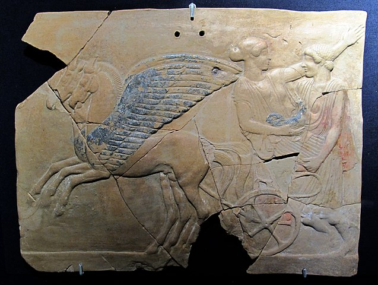
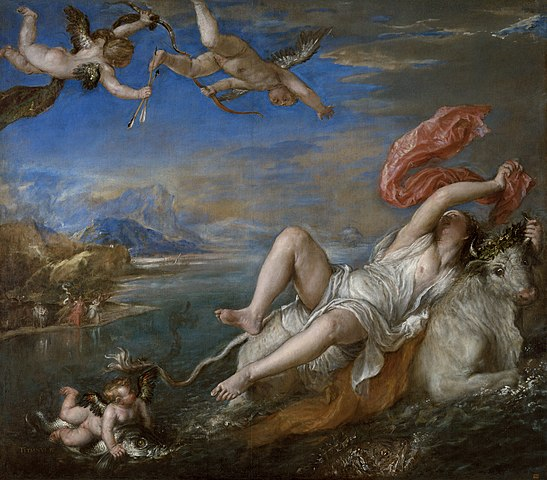
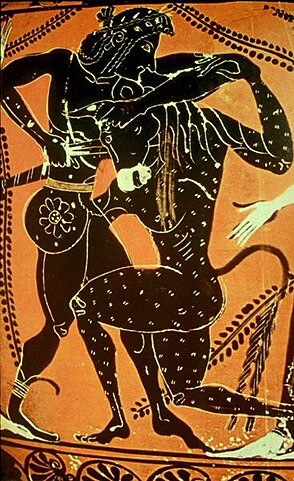
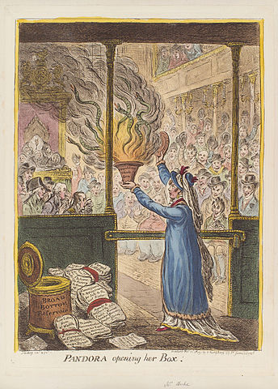

Mitos
Los mitos de la mitología griega son como las chismosas leyendas de un mundo antiguo lleno de dioses traviesos, héroes valientes y criaturas asombrosas. Estas historias, contadas de generación en generación, nos llevan a un reino de maravillas donde los dioses caminan entre los mortales, los héroes desafían a monstruos imposibles y el destino se teje en los hilos del destino. A través de estas historias, aprendemos lecciones sobre la vida, el sacrificio y el significado del heroísmo.
Así que prepárate para adentrarte en un mundo donde lo imposible es posible y lo inimaginable se hace realidad.
El rapto de Perséfone
Deméter, la diosa de la agricultura, tenía una hija llamada Perséfone. Un día, mientras Perséfone recogía flores en un campo, Hades, el dios del inframundo, emergió de la tierra y la secuestró para hacerla su esposa. Deméter, desesperada por la desaparición de su hija, comenzó a vagar por el mundo, negando su fertilidad y provocando un invierno eterno. Los mortales sufrieron y los dioses no pudieron convencer a Deméter para que restaurara la fertilidad a la Tierra. Finalmente, Zeus intervino y negoció con Hades la liberación de Perséfone, pero antes de su partida, Hades le dio una granada para comer. Al comer la granada, Perséfone quedó atada al inframundo y se convirtió en la reina de los muertos. Como resultado de este acuerdo, Perséfone pasó parte del año en el inframundo con Hades, lo que representa el ciclo de las estaciones: su presencia en la Tierra trae el florecimiento de la primavera y su ausencia provoca el frío del invierno.

El rapto de Europa
Europa, una princesa fenicia, estaba jugando con sus amigas en la playa cuando Zeus, el rey de los dioses, se enamoró de ella. Zeus se disfrazó de un majestuoso toro blanco y se mezcló entre el ganado de Europa. Fascinada por la mansedumbre del toro, Europa se montó en su espalda. De repente, el toro corrió hacia el mar y llevó a Europa a través de las olas hasta la isla de Creta. Allí, Zeus reveló su verdadera identidad y sedujo a Europa. Ella se convirtió en la reina de Creta y dio a luz a tres hijos: Minos, Radamanto y Sarpedón. Este mito representa la influencia divina en los asuntos humanos y la capacidad de Zeus para transformarse y seducir a los mortales.

El laberinto del Minotauro
El rey Minos de Creta, en represalia por la muerte de su hijo, exigió un tributo anual de Atenas: siete jóvenes y siete doncellas que serían sacrificados al Minotauro, una criatura mitad hombre, mitad toro, que habitaba en un laberinto construido por Dédalo. Uno de los voluntarios para enfrentarse al Minotauro fue Teseo, un valiente héroe ateniense. Con la ayuda de Ariadna, la hija de Minos, quien le dio un hilo para encontrar su camino de regreso, Teseo entró en el laberinto y mató al Minotauro. Después de su victoria, escapó del laberinto y llevó a los jóvenes atenienses de regreso a Atenas. Este mito ilustra el coraje y la astucia de Teseo, así como la influencia divina en los asuntos humanos.

La caja de Pandora
Como castigo por la desobediencia de Prometeo al robar el fuego de los dioses para dárselo a los humanos, Zeus ordenó la creación de Pandora. Los dioses le dieron a Pandora una jarra (o caja) y le advirtieron que nunca la abriera. Sin embargo, Pandora, tentada por la curiosidad, abrió la jarra y liberó todos los males y desgracias del mundo, incluyendo la enfermedad, el odio y la tristeza. Horrorizada por lo que había hecho, cerró la jarra justo a tiempo para evitar que la esperanza escapara. Aunque Pandora había liberado todos los males en el mundo, la esperanza permaneció dentro de la jarra como un consuelo para la humanidad en tiempos de dificultad. Este mito explora las consecuencias de la curiosidad humana y la naturaleza dual del mundo, que contiene tanto el bien como el mal.

Reflexión
Estos mitos de la mitología griega nos sumergen en un mundo de maravillas y complejidades, donde los dioses y los mortales se entrelazan en un baile eterno de amor, tragedia y destino. A través de estas historias, exploramos los misterios del universo y los anhelos más profundos del corazón humano.
Nos enseñan lecciones sobre la naturaleza cambiante del mundo, como el ciclo de las estaciones reflejado en el rapto de Perséfone, y la influencia divina en los asuntos humanos, como se ve en el rapto de Europa por Zeus. Descubrimos el poder del coraje y la astucia en el enfrentamiento con desafíos aparentemente insuperables, como Teseo luchando contra el Minotauro en el laberinto de Creta.
Además, reflexionamos sobre la dualidad inherente de la existencia, como se ilustra en la creación de Pandora, donde la esperanza coexiste con la desesperación en el corazón humano. Estas historias nos invitan a explorar los rincones más oscuros de nuestra psique y a encontrar luz en medio de la oscuridad.
En última instancia, los mitos griegos nos recuerdan que somos parte de un tejido más amplio de mitos y leyendas, conectados por hilos invisibles de historia y tradición. A medida que contemplamos estas narrativas atemporales, nos sumergimos en un océano de sabiduría y maravilla que continúa inspirando y cautivando a generaciones en todo el mundo. Que su legado perdure como un faro de luz en nuestro viaje a través de la vastedad del tiempo y el espacio.